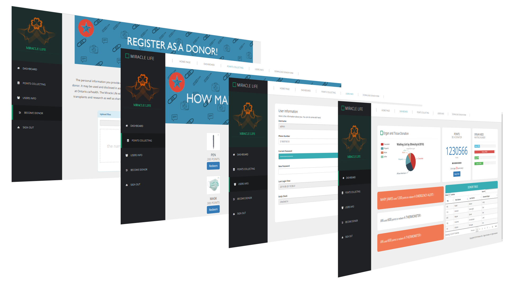
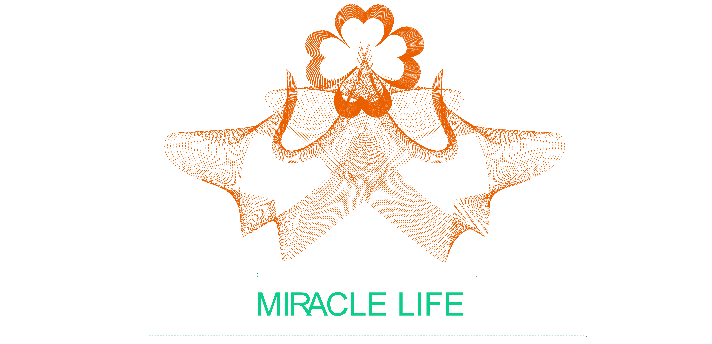
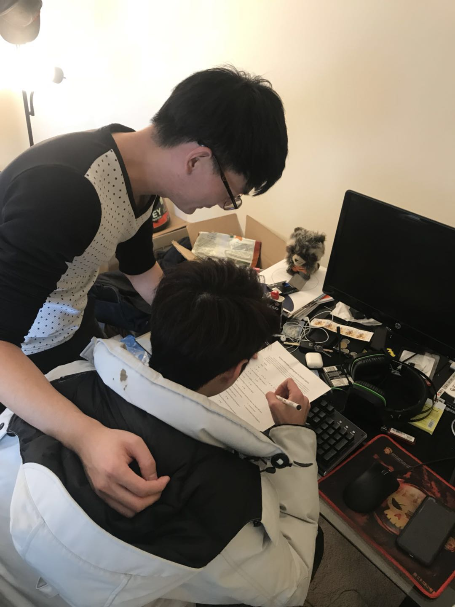
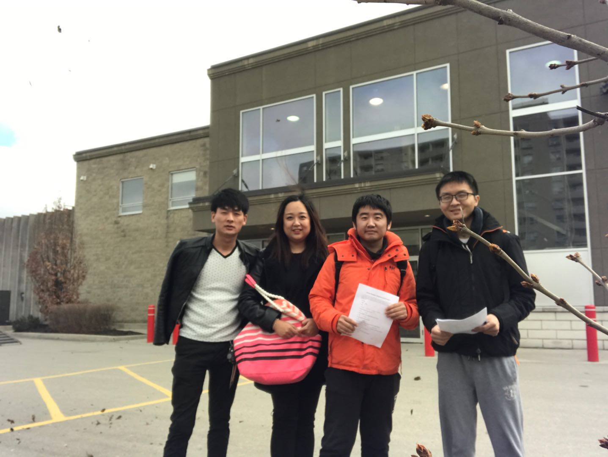
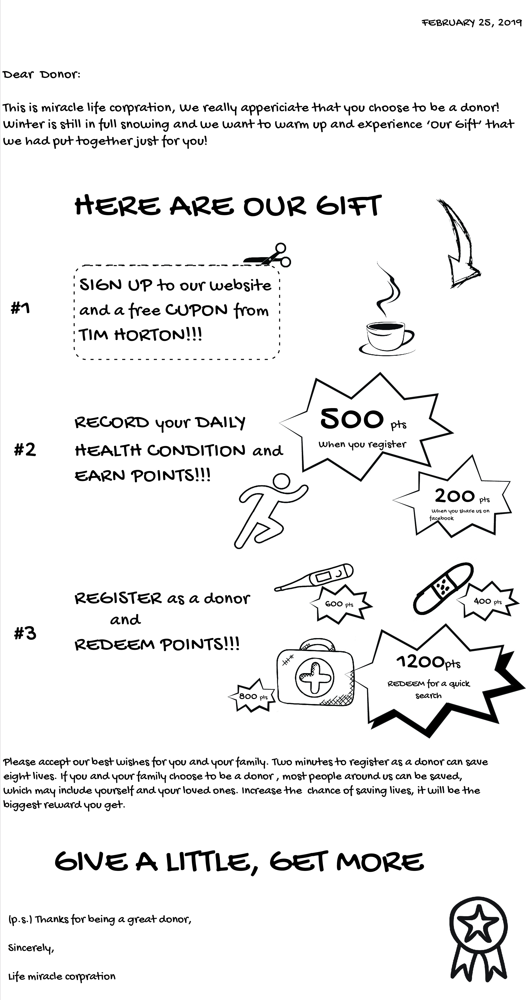

OVERVIEW
Organ Donation Promotional Video
This is a responsive website about Ontario Organ Donation. The main job of this project is to create a campaign to do a survey about organ donation and then design a responsive website to promote the campaign. This is a group project in five students a group. We had a designer, front and back-end developer, project manager, and a video/animations person. I take the responsibility of creating an admin page as a back-end developer. Sometimes I am also the project manager to distribute work. This is a big project that we did a campaign(street questionnaire, put up the poster, and organ donation lecture), discussed the index and admin page design, and came up with donor profit(points redeem system).
Project Link
www.organ-donation.git.comTo view and read more about the application visit www.organ-donation.git.com
Type
Web Design and Development, Branding, UX/UI
Date
April 2019
Technologies


BRIEF
Today, in Ontario, over 1,500 people are waiting for a lifesaving organ transplant. This is their only treatment option, and every 3 days someone will die because they did not get their transplant in time. We are actively involved in raising awareness and education for organ and tissue donation and transplantation. We maintain a national transplant registry for inter-provincial organ sharing and related programs and we help save and improve lives by working closely with the organ and tissue donation and transplantation communities.
BRAND IDENTITY
The main shape of the logo is a Four-leaf clover and hands, which represents Inheritance of life. The logo also looks like the two hands holding up a four-leaf clover.
MIRACLE LIFE is the name of the company, which represent the organ donation meaningful if we will succeed for the donate we just like to make the miracle.
CAMPAIGN
Street Questionnaire
After we made the concept of this campaign, the first thing we did is to create a questionnaire form and then went outside to do the street questionnaire. After four hours of hard work, we found that there are a lot of people have the awareness of organ donation and they are will join in. This is a piece of good news for us to continue on our work to absorb more people in.
Put Up Poster
In order to do better promotion, we designed and printed a lot of posters and putting them up in most area of London.
Organ Donation Lecture
As I am the president of Fanshawe Chinese Society which is a Fanshawe official club, our project group cooperated with Fanshawe Chinese Society to hold a lecture about increasing students awareness of organ donation. Our main target students are Chinese students because we found most Chinese students know less about organ donation after the marketing survey. In this activity, we explained what is organ donation, how emergency of organ demand, and how to register to be a donor in Be A Donor and our website!
POINTS REDEEM SYSTEM
In order to attract more people to know some news about organ donation, we designed points redeem system. There are now eight products and will be more in the future giving to people to redeem. In this system, people can get points in different ways, like daily check: 20 points, sign up on our website: 300 points, and upload donor form: 3000 points. There is a lot of interesting stuff you can redeem! The great thing in our points system is that there is a helpful service --- emergency alert, you can redeem it in 1200 points to help you or your friends get a quick channel to get the corresponding organ!